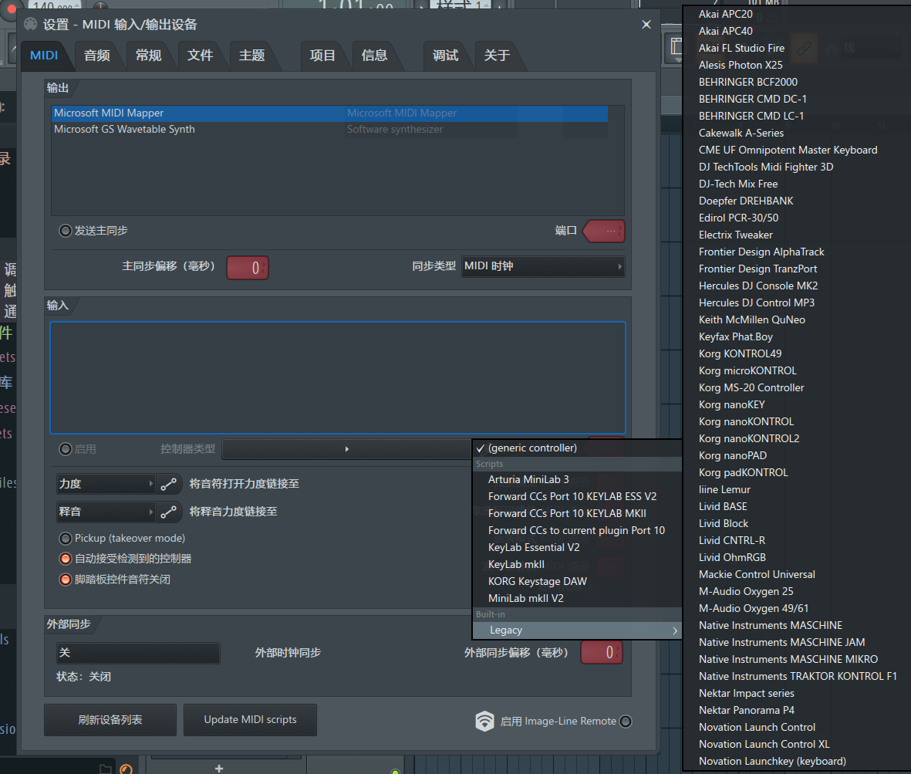

M-AUDIO Keystation 61 MK3 Review
A review of the M-AUDIO Keystation 61 MK3, with some of the problems I ran into along the way
Preface
Generally speaking, when someone decides to get into making electronic music, the first thing they do is search for how to pirate FL Studio, and then imitate the musicians they’ve seen in videos by buying a MIDI keyboard — because once you own one, you at least look the part.
Unfortunately, this thing has always been: if you know how to use it, it’s very useful. But if you don’t, its final destination is basically collecting dust.
Even more unfortunately, I belong to the latter group.
So in order to learn how to use one, I bought an M-AUDIO Keystation 61 MK3 from the second-hand market. After a brief stretch of hands-on time, I decided to write a short review.
Disclaimer: I’m an amateur. This is purely my personal opinion.
Why This One
I bought this model because it checked the following boxes:
- Semi-weighted keys: I’ve previously used the MIDIPLUS X6 PRO, and the practice rooms at school had YAMAHA P95s. Both are semi-weighted pianos, and both felt quite nice. So I wanted a keyboard with weighted action.
- Full-size keys and a relatively large key count: I’ve recently been learning piano, so full-size keys and a decent number of them are essential. 61 keys is just right for my current level.
- Cheap: I got it for 400 RMB, far below the average market price.
Getting Started
The keyboard’s feature set is very bare-bones — only the most basic functions: the keybed, pitch bend wheel, modulation wheel, transport controls, and one volume fader. Some functions can be activated by holding down a function key and then pressing the corresponding key, and there are quite a few of those. But I didn’t look into them closely. There are no pads or knobs like other MIDI keyboards have. For who I am right now, though, there’s really no point in studying any of that.
As plain as its feature set, the back of the keyboard has barely any ports — a square USB-B data/charging port, a 6.35mm audio jack for a sustain pedal, a dedicated power port, and a standard MIDI port. That’s it.
Quite nice. Everything you need, nothing you don’t.
There are two octave-shift buttons with a range of ±2 octaves. The LED lights above them change color and light up accordingly. Pressing both buttons at the same time resets to the default.
The keyboard has no built-in sound source. If you’re using a computer or other electronic device as the sound source, then just like other devices of its kind on the market, you connect it via a USB cable and it handles both power and data. The power draw is tiny (9V 500mA), so even on a portable device you don’t really need to worry about battery drain.
The Experience
Although it’s a semi-weighted keyboard, I personally feel the touch doesn’t measure up to the two semi-weighted keyboards I’ve played. The keys have little substance to them — they feel feather-light when pressed down. As a device for learning piano, while it’s a bit better than those plastic toy keyboards whose touch bears no resemblance to piano at all, it still feels somewhat awkward.
I’ve recently been using this keyboard to practice some simple pieces — a bit of Beyer, a bit of Thompson Book 2, and I’ve tried playing some piano pieces I like, though they’re all a bit too hard for me. Overall, the biggest problem is still that slightly plasticky feel — the floaty touch makes it a bit hard to control playing dynamics. If you genuinely want to practice piano, just go to a nearby piano room and play a digital piano instead.
However, when it comes to playing chords and the like, I actually think it works in this keyboard’s favor. After all, in a live performance setting, you could presumably play chords faster and more nimbly.
Problems After Connecting to FL Studio
This section is the biggest reason I wrote this article. While I can’t claim to have solved everything completely, it should at least be of some use.
This keyboard has no FL Studio-specific integration. On first connection, only the most basic keyboard functions work. The transport controls, pitch bend and modulation wheels, and the pedal are all unusable.
Transport Controls
This is the easiest problem to solve. According to the manual, the transport control section uses Mackie Control Universal.
Mackie originally made the “Logic Control,” a dedicated controller designed for the music software Logic Pro. Later Mackie released the “Mackie Control,” which had similar functionality but was compatible with more DAWs. Eventually the two product lines merged, evolving into the famous “Mackie Control Universal (MCU)“
Considering this keyboard was designed for Logic in the first place, that’s to be expected.
After connecting the keyboard to your computer, in Options - MIDI Settings you’ll see two devices. Set the device type of the lower one to Mackie Universal Control (inside the Legacy subfolder).
Pitch Bend & Modulation Wheels
Rather than a lack of integration, it’s more accurate to say these aren’t bound at all. In FL’s status bar you can see the incoming signal, but it’s an unrecognized one. Here are two solutions:
The first is manual linking. In the file browser on the left, under Current project - Remote control, link Modulation wheel and Channel pitch — select one, wiggle the wheel, and it gets linked, the same way you’d link a knob.

The second is similar to the previous step: change the device type of the first device to KeyLab mkII, and the pitch bend and modulation wheels will work.
The absurd part is that these two aren’t even made by the same company — the names just happen to look alike.
The pitch bend wheel’s range is only ±200 cents. I don’t know whether that’s a hardware setting or a software limitation.
In practice, I recommend the second method; manual linking only works within individual projects.
(Note to self: one semitone equals 100 cents)
(Two semitones is called a minor second)

The Pedal
The pedal actually works out of the box — plug it into the corresponding port on the back of the keyboard and it starts working. But this only works with the SP-2 model pedal. The pedal bundled with the keyboard produces no response when plugged in.
The Volume Fader
Haven’t figured out how to solve this one yet. Probably the only way is to manually link it to the volume track.
Epilogue
Looking back, it’s been almost four years since I first bought a MIDI keyboard. That was a YAMAHA PSS-A50. “MIDI” in name, but in essence it was just a kids’ electronic keyboard with MIDI functionality. 37 keys, no weighting, and mini-size keys to boot. But I was quite fond of that keyboard at the time — a bit bulky, and a bit childish, but small as a sparrow, complete with all the vital organs: it had every function it should have. Later I wanted to try something new, and after starting university I eventually sold it off.
The second keyboard was a MIDIPLUS TINY+, bought because I’d used my friend’s MIDIPLUS X6 PRO — the touch and features were both great — so I planned to buy a lower-end product from the same brand.
This was an extremely wrong choice.
I really dislike that keyboard, because its touch is even worse than the PSS-A50’s. The keys feel mushy and lifeless to press, and the velocity curve after connecting it to a DAW was outright absurd — the velocity kept landing on the two extremes, either too hard or too soft, and even after adjusting the velocity curve, the result was far from satisfying. That keyboard got shelved by me, only taken out to use once in a while when I happened to remember it.
This summer vacation is over, and I haven’t learned all that much. But at least there’s a little joy in playing, and that’s not bad either.